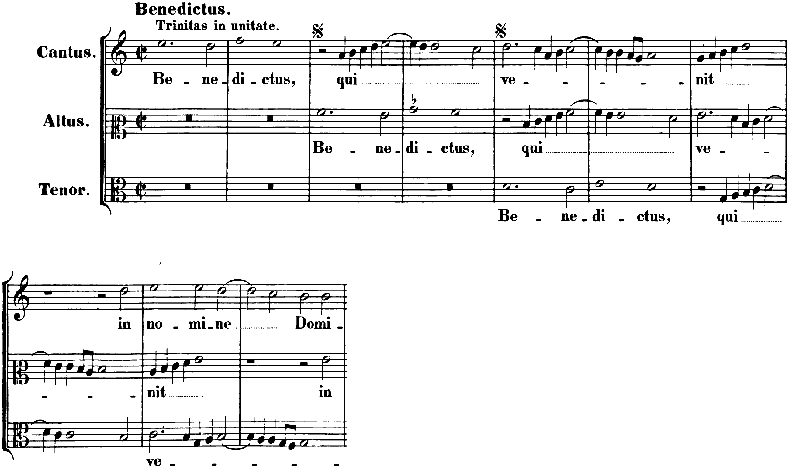

Il giro di tutti i gradi
Il III e il VII, gli ultimi due gradi; la progressione, che ripete un modello su gradi diversi; e quella per quinte discendenti, che li attraversa tutti.
Appena inizia una progressione, l’ascoltatore sa già in anticipo che cosa accadrà di lì sino a un certo punto in avanti.
Diether de la Motte, Manuale di armonia, citato da Carlo Marenco, Manuale d’armonia, p. 34
Lezione di due ore. Seconda ora: La terza specie: nota cambiata e doppia volta. I compiti per casa sono alla fine.
La progressione per quinte discendenti
Il modello è di due accordi le cui fondamentali scendono di quinta (I–IV); le riprese scendono di grado: VII–III, VI–II, poi la cadenza V–I. La progressione resta nella tonalità, quindi «gli intervalli tra i gradi della scala non sono sempre uguali» (Piston, p. 309): fra IV e VII il basso fa la quarta eccedente fa–si. Nelle riprese Marenco ammette deroghe vietate altrove: la sensibile raddoppiata, il VII allo stato fondamentale, i gradi poco frequentati come il III (p. 35). Nel minore si usa la scala naturale e la sensibile torna «per scopi cadenzali all’interno dell’ultima ripresa» (ibidem).
Bb. 1–4: tutti gli accordi allo stato fondamentale. Il modello (b. 1): il soprano sale mi–fa, il contralto sol–la, il tenore tiene il do; ogni ripresa fa lo stesso un grado sotto (re–mi, fa–sol, si tenuto; do–re, mi–fa, la tenuto). Alla b. 2 il VII ha la fondamentale raddoppiata, «in conseguenza della necessità di riprodurre simmetricamente la disposizione della prima triade del modello» (Marenco, p. 35). Bb. 5–8: la progressione derivata, con la stessa successione di fondamentali e un accordo su due in primo rivolto; il basso scende di terza e sale di grado (p. 36), il soprano tiene la nota comune e scende di grado.
Cambiare disposizione a metà progressione per evitare il VII o il raddoppio della sensibile: il modello non è più riconoscibile. Le deroghe valgono dentro le riprese; nel punto in cui il modello si aggancia alla prima ripresa (bb. 1–2) «non è tollerato nessun tipo di errore» (Marenco, p. 35).
Cinque quinte in un corale
Nel corale BWV 1/6 (U6 L1) la seconda frase scende verso la cadenza per quinte: alla b. 4 il VI⁶ (re–fa–la con il fa al basso), il II (sol al basso, senza la terza), il V, il I, e alla b. 5 il IV. Le fondamentali sono re–sol–do–fa–si♭: la catena della slide precedente, senza modello ripetuto. Il basso porta le fondamentali dalla seconda in poi, il soprano scende re–do–la.

- ① b. 4, primo movimento: VI⁶
- ② b. 4, secondo movimento: II
- ③ b. 4, terzo movimento: V
- ④ b. 4, quarto movimento: I
- ⑤ b. 5, primo movimento: IV
Si ascoltano le bb. 0–6 seguendo il basso. Al secondo ascolto, alla b. 4, si dicono le fondamentali su ogni movimento: re, sol, do, fa; poi si♭.
Sintesi
Secondari della dominante. Il VII in primo rivolto, senza raddoppiare la sensibile; il III sotto il settimo grado che scende verso il IV. Nel minore sono I e V del relativo.
Un modello e almeno due riprese, identiche nelle posizioni e nei raddoppi; nelle riprese, deroghe ammesse.
I–IV–VII–III–VI–II–V–I: tutti i gradi. Derivata: un accordo su due in primo rivolto. Nel minore, scala naturale e sensibile alla fine.
Venerdì 8/1/2027, ora 41: la terza specie con la nota cambiata e la doppia volta. La lezione si chiude con il solfeggio parlato, cantato e ritmico.
Solfeggio a prima vista
Due figure di quattro semiminime
La doppia volta e la nota cambiata: le due figure della terza specie in cui una dissonanza è lasciata, in apparenza, per salto.
Si tratta dell’abbellimento di una figura di due note contigue […] consistente in due frammenti di scala inseriti l’uno nell’altro e convergenti entrambi sulla nota finale.
Felix Salzer, Contrappunto e composizione, p. 66
La doppia volta
C10Le note di figurazione melodica, pp. 298–299
Sezione C, unità 10, lezione 31 «Note di passaggio e di volta». La doppia volta e la nota cambiata non sono nel libro.
Nella doppia volta «il secondo e il terzo tempo della battuta recano due note dissonanti separate da un salto di terza»; la regola della dissonanza per grado è violata solo in apparenza, perché «entrambe le dissonanze sono note di volta del Si collocato in tempo forte e la melodia le tocca entrambe prima di tornare al suo punto di partenza» (Salzer, Contrappunto e composizione, pp. 62–63). La figura comincia sul primo quarto (p. 66); è più morbida se la nota superiore viene prima, meglio se una delle due è a distanza di semitono, e dopo l’ultima nota conviene proseguire per grado nella stessa direzione (pp. 63–64).
Sopra il canto dato in do della U5 L5. Alla b. 2, sopra il fa: fa–sol–mi–fa (ottava, nona, settima, ottava), con la superiore prima e il semitono mi–fa; dopo, il contrappunto sale per grado al sol della b. 3. Alla b. 6, sopra il mi: sol–la–fa–sol (terza, quarta, seconda, terza): due dissonanze, separate dal salto la–fa. Le altre dissonanze sono di passaggio o di volta semplice, come nella U5 L5.
Scrivere la figura partendo dal secondo quarto: le due note vicine cadono sul terzo e sul quarto, la nota di partenza torna sul primo quarto della battuta dopo, e il disegno si legge come un salto da una dissonanza. La doppia volta occupa una battuta intera, dal primo quarto al quarto.
La nota cambiata
La nota cambiata abbellisce due note vicine (re e do) con due frammenti di scala, re–do–si e la–si–do, inseriti l’uno nell’altro: re–do–la–si–do. «La seconda nota è dissonante e la sua risoluzione per grado non è abolita, ma semplicemente posposta dal salto che la segue; la terza nota della figura […] dev’essere consonante, così come la quinta e conclusiva nota della figura; il salto che segue la dissonanza dev’essere un salto di terza.» La figura comincia sul primo quarto; è ammessa anche la forma ascendente (Salzer, pp. 66–67). Per de la Motte il salto è un’«interruzione di una figurazione di passaggio»: la nota saltata arriva subito dopo (Il contrappunto, p. 134).
Sopra un canto dato nuovo in fa. Alla b. 2, sopra il sol: sol–fa–re–mi e il fa della b. 3 (ottava, settima dissonante, quinta, sesta, poi la sesta sul la). Alla b. 5, sopra il si♭: si♭–la–fa–sol e il la della b. 6. In tutte e due la figura parte dall’ottava sopra il canto dato: solo così la seconda nota è dissonante e la terza consonante. Per la stessa ragione il canto dato, dopo la battuta della cambiata, sale di grado: se scendesse di grado, la quinta nota farebbe ottava con lui, e le ottave cadrebbero su due battere vicini.
Un salto di quarta invece che di terza, o una terza nota dissonante: la figura non c’è più, c’è una dissonanza lasciata per salto. La cambiata cominciata sul terzo quarto: la nota consonante dopo il salto cade sul battere seguente e si sente come punto d’arrivo, e le prime tre note diventano «un frammento a scala di quarta discendente con l’omissione di una nota di passaggio» (Salzer, p. 67).
Le due figure in Palestrina
Il Benedictus della «Missa Ad fugam» è un canone a tre voci: il contralto entra alla b. 3 con il disegno del soprano una quinta sotto, il tenore alla b. 5 una quinta sotto il contralto. Il soggetto comincia con una doppia volta in valori larghi: mi (semibreve puntata), re, fa, mi (bb. 1–2). Alla b. 5 il soprano canta la nota cambiata nella forma di Salzer, in semiminime dopo una minima puntata: re–do–la–si–do. Il do è settima sopra il re tenuto dal tenore, il la è quinta, il do d’arrivo è ottava sul do del tenore. La stessa figura torna nel contralto alla b. 7 (sol–fa–re–mi–fa) e nel tenore alla b. 9 (do–si–sol–la–si).

- ① bb. 1–2, Cantus: doppia volta in valori larghi: mi–re–fa–mi
- ② b. 5, Cantus: nota cambiata: re–do–la–si–do
- ③ b. 7, Altus: la stessa figura: sol–fa–re–mi–fa
- ④ b. 9, Tenor: la stessa figura: do–si–sol–la–si
Si ascoltano le bb. 1–10 seguendo il soprano; alla b. 5 si canta a mezza voce re–do–la–si–do. Al secondo ascolto si seguono il contralto (b. 7) e il tenore (b. 9).
Lavoro guidato: una doppia volta e una cambiata
Scrivi un contrappunto di terza specie sopra il canto dato, fra il re₃ e il re₄, con una doppia volta alla b. 3 e una nota cambiata alla b. 5. 1. Prima, ultima e penultima battuta (2 minuti). 2. Le due figure: la cambiata parte dall’ottava sul sol (3 minuti). 3. Le altre battute (5 minuti). 4. Il controllo (2 minuti).
Sintesi
Dal primo al quarto quarto: la nota, le due vicine (meglio prima la superiore), la nota. Le due di mezzo possono essere dissonanti.
Cinque note, dal primo quarto al battere seguente: grado sotto (dissonante), salto di terza (consonante), grado sopra, grado sopra (consonante).
La cambiata parte dall’ottava; se il canto dato poi scende di grado, sul battere seguente nascono ottave. Si sceglie la battuta prima di scrivere.
Mercoledì 13/1, ora 42: il solfeggio cantato con i cromatismi di passaggio. La lezione si chiude con il solfeggio parlato, cantato e ritmico.
Compiti per la prossima volta
1 · Scritto: Terza specie in sol, con due cambiate e una doppia volta
Scrivi un contrappunto di terza specie sopra il canto dato, fra il mi₃ e il mi₄, con la nota cambiata alle bb. 2 e 7 e la doppia volta alla b. 4. 1. Prima, ultima e penultima battuta. 2. Le tre figure (la cambiata parte dall’ottava). 3. Le altre battute. 4. Sotto ogni nota l’intervallo con il canto dato.
È la scrittura della settimana. Dopo le battute della cambiata il canto dato sale di grado: per questo la figura sta proprio lì.
Sul quaderno, a matita. La foto del lavoro finito va su Classroom. Nel Workbook: apri l’esercizio 6.6 ↗
Compiti per la prossima volta
2 · Solfeggio e 3 · dettato
n. 423 e n. 424 parlato · n. 425 endecalineo · n. 426 e n. 427 cantato · n. 428 e n. 429 ritmico
Ogni pezzo a tempo, senza fermarti: il parlato a nomi, il cantato prendendo il primo suono dalla tastiera, il ritmico battendo la pulsazione.
Scrivi il ritmo sul quaderno: otto battute in 4/4. Ascolta tutto due volte, poi ogni coppia di battute due volte, poi il collegamento 1–4, 3–6 e 5–8, e tutto per controllare.
Il dettato · otto battute
Le sezioni (riferimento, tutto, le coppie, il collegamento) si ascoltano una per una e si ripetono quanto serve; le fasi fanno la procedura della classe, con gli annunci e le pause, da qualunque punto.
Sul quaderno scrivi in testa la sigla C2-D-U06-L5. Si corregge all’inizio della prossima lezione.
Compiti per la prossima volta
Scrittura: contrappunto
Scrivi un contrappunto di seconda specie (due note contro una) sopra il canto fermo, in modo ionico (finale do): otto battute. Comincia su una consonanza perfetta, alla cadenza la sensibile sale alla finale, niente quinte e ottave consecutive.
Sul quaderno, con la sigla C2-CP-U06-L5 in testa; la foto va su Classroom.
Testo per il registro elettronico
Scritto: Terza specie in sol, con due cambiate e una doppia volta (Workbook, esercizio 6.6), sul quaderno; la foto va su Classroom. Solfeggio dal quaderno di lettura: parlato n. 423, 424; endecalineo n. 425; cantato n. 426, 427; ritmico n. 428, 429 (a tempo, senza fermarsi). Dettato C2-D-U06-L5 dalla pagina della lezione (sezioni da ascoltare, o le fasi della procedura guidata), sul quaderno con la sigla. Contrappunto di seconda specie sul canto fermo (C2-CP-U06-L5).
In classe
Leggiamo insieme: parlato
A nomi, a tempo, con la mano che batte. Chi si ferma riparte dalla battuta dopo.
Apri il n. 418 nel quaderno di lettura ↗ chiave di tenore · 4/4
In classe
Leggiamo insieme: endecalineo
A nomi, a tempo, sul doppio rigo: prima si trovano con gli occhi i passaggi da una chiave all’altra.
In classe
Leggiamo insieme: cantato
Si prende il tono dalla tastiera, si canta insieme; poi a gruppi.
Apri il n. 420 nel quaderno di lettura ↗ chiave di violino · 3/4 · la minore
Apri il n. 421 nel quaderno di lettura ↗ chiave di violino · 4/4 · la minore
In classe
Leggiamo insieme: ritmico
Tutti insieme, battendo la pulsazione. Poi a file, due battute a testa.